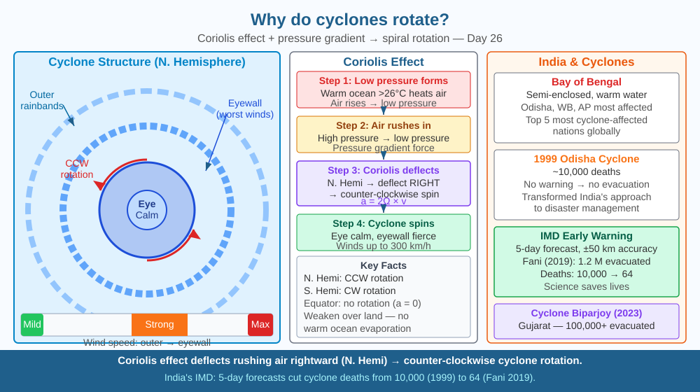

By the end of this lesson, you should be able to explain the Coriolis effect, describe why cyclones rotate counter-clockwise in the Northern Hemisphere, and predict what happens when a cyclone crosses the equator.
Cyclone Biparjoy (2023) killed over 14 people and displaced thousands when it hit Gujarat. All cyclones over India rotate counter-clockwise when viewed from above. But cyclones in Australia rotate clockwise. Why? And why does a cyclone spin at all — why doesn't air just rush straight into the low-pressure centre?
Step 1 — Low pressure forms. Warm ocean water (above 26°C) heats air, which rises rapidly. The rising air creates a region of low pressure at the ocean surface.
Step 2 — Pressure gradient force. Surrounding higher-pressure air is pushed toward the low-pressure centre, like air rushing into a vacuum. Without anything else, this air would move in a straight line toward the centre.
Step 3 — Coriolis effect. Earth rotates from west to east. This rotation causes moving fluids (air, water) to be deflected — to the right in the Northern Hemisphere and to the left in the Southern Hemisphere. The Coriolis acceleration = 2Ω × v (where Ω is Earth's rotation rate and v is wind velocity). This deflection is zero at the equator and maximum at the poles. Because cyclonic spin is maintained by continuous Coriolis deflection of the inflowing air, a cyclone that crossed the equator would lose this organising force and rapidly weaken and dissipate.
Step 4 — Cyclonic rotation. In the Northern Hemisphere, air rushing toward a low-pressure centre is deflected to the right — it curves counter-clockwise around the centre. In the Southern Hemisphere, deflection is to the left — clockwise rotation. This is why the two hemispheres have opposite rotation.
Cyclone structure: - Eye: Calm centre, 20–60 km wide, clear skies, low pressure - Eyewall: Most intense winds (up to 300 km/h), rain, dangerous zone - Rainbands: Spiral arms of cloud extending hundreds of km
Why they weaken over land: Cyclones get energy from warm ocean evaporation. Over land, this supply stops, friction increases, and the cyclone rapidly weakens.
Picture yourself standing at the centre of a merry-go-round spinning counter-clockwise. You throw a ball toward the edge. To an observer watching from above, the ball travels in a straight line. But to someone standing on the spinning platform, the ball curves to the right — because the platform rotates beneath it.
Earth is the merry-go-round. Winds rushing toward a low-pressure centre are like that thrown ball. Earth's rotation beneath them causes the deflection we call the Coriolis effect. The faster the wind and the farther from the equator, the stronger the curve:
The low-pressure core is the drain at the centre of the sink. The Coriolis effect is what makes the water spiral rather than pour straight down. Remove Earth's rotation and cyclones would collapse into simple inward rushes of wind — no rotation, no eye, no spiral structure, far less destructive.
The included SVG shows a top-down view of the Northern Hemisphere Bay of Bengal with a developing cyclone centred over the water. Concentric rings of isobars (pressure contours) shrink inward toward the eye, labelled with decreasing pressure values from 1010 hPa at the outer edge to 950 hPa at the centre. Curved white arrows trace the wind path spiralling counter-clockwise inward, with each arrow labelled to show the Coriolis deflection turning it rightward at each step. A second inset panel shows the Southern Hemisphere equivalent with arrows spiralling clockwise, illustrating the mirror-image deflection. A thin dashed line marks the equator between the two panels, with the annotation "Coriolis = 0 here — cyclones cannot cross." The eye is shown as a clear circular patch with calm skies and descending air, surrounded by the darker shaded eyewall region marking maximum wind speed.

India is among the top five countries worst-affected by tropical cyclones. The Bay of Bengal is a particularly active cyclone zone because it is semi-enclosed, the water is warm year-round, and Bangladesh and Odisha are low-lying. The 1999 Odisha Super Cyclone killed ~10,000 people. After that, India built one of the world's best cyclone early-warning systems — the India Meteorological Department (IMD) now gives 5-day forecasts with landfall accuracy within 50 km. Cyclone Fani (2019) was predicted 5 days in advance; 1.2 million people were evacuated from Odisha, and deaths dropped from thousands (in 1999) to 64.
Coriolis in a bowl: Fill a large bowl with water and let it settle completely (15 minutes). Carefully pull the drain plug (or make a small hole). If the setup is ideal (no initial rotation from filling), water drains with a slight spin — though in practice, home experiments often show random rotation because the Coriolis effect is very small at household scales. Real cyclones span thousands of kilometres — Coriolis dominates at that scale.
The Coriolis effect is often taught using water drains (toilets drain counter-clockwise in the Northern Hemisphere). This is actually a myth — the Coriolis effect on a toilet is negligible; toilet spin is determined by the direction water entered the bowl. But the effect is very real and important on large scales (cyclones, ocean gyres, atmospheric circulation). Foucault's pendulum — a large pendulum left swinging for hours — slowly rotates its plane of swing due to Earth rotating beneath it, providing the first direct visual proof of Earth's rotation. A Foucault pendulum at the poles rotates 360° per day; at the equator, it would not rotate at all.
Predict: If global warming raises average ocean surface temperatures by 2°C, what would you expect to happen to the frequency, intensity, and geographic range of cyclones — and what does this imply for India's eastern and western coastlines over the next 50 years?
What causes a cyclone to rotate rather than move straight inward?
Correct answer: C
Why is understanding the Coriolis effect and pressure gradient more useful than knowing cyclones spin?
Correct answer: B
If a cyclone crossed the equator, what would you predict about its rotation?
Correct answer: B
Cyclone Fani (May 2019) formed in the Bay of Bengal at around 8°N latitude, intensified over water surface temperatures of 30–31°C, and made landfall near Puri, Odisha, with sustained winds of 175 km/h. The IMD issued a warning 72 hours before landfall.
Using what you know about cyclone formation, rotation, and intensification: (a) explain why Fani intensified so rapidly over the Bay of Bengal rather than weakening; (b) predict whether a similar storm forming at 5°N (closer to the equator) would be weaker or stronger by the time it reached the same latitude as Fani — give your reasoning in terms of Coriolis effect and ocean heat; (c) calculate the pressure gradient force direction at the moment Fani's eye was 200 km offshore from Puri, given that pressure outside the system was 1010 hPa and inside the eye was 932 hPa.
The Coriolis effect is so weak at small scales that it has no measurable influence on bath drains or toilet flushes — despite what popular science articles claim. A carefully controlled experiment at MIT in 1962 required a 2-metre circular tank, water left to settle for 24 hours, and extremely sensitive instruments to detect Coriolis-induced rotation. In everyday sinks, the direction of the spiral is set entirely by the shape of the basin and how the tap filled it. Yet this same force — negligible in your bathroom — is strong enough to organise a cyclone 1,000 km wide and sustain winds of 300 km/h for two weeks across an ocean.
Cyclones rotate because Earth's rotation deflects winds sideways via the Coriolis effect — without this deflection, air would rush straight into a low-pressure centre and no spiral, no eye, and no sustained destructive storm would ever form.